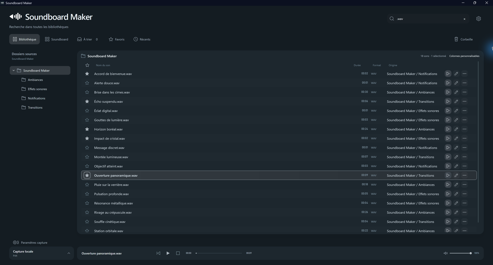

01
Organiser
Retrouvez rapidement vos sons avec les bibliothèques, dossiers, favoris et recherche.
Organisez, éditez et déclenchez vos extraits depuis une seule application. Avec ou sans Stream Deck.

ESSENTIEL, SANS COMPLEXITÉ
Un espace cohérent pour préparer un son, le retrouver et le lancer au bon moment.
Retrouvez rapidement vos sons avec les bibliothèques, dossiers, favoris et recherche.
Coupez un extrait, ajustez-le et conservez uniquement le passage qui compte.
Enregistrez l’audio système ou récupérez les dernières secondes avec Replay Buffer.
Jouez vos sons depuis le Soundboard intégré ou les touches de votre Stream Deck.
LE LOGICIEL, POUR DE VRAI
Quatre captures officielles.
PAS BESOIN DE MATÉRIEL
Créez vos pages, organisez vos touches et lancez plusieurs sons indépendamment. Un Stream Deck physique reste entièrement facultatif.
Wave Link est nécessaire pour envoyer les sons vers un microphone virtuel dans la configuration prise en charge. Pour une écoute au casque ou sur les enceintes, il n’est pas nécessaire.
PRÊT À JOUER
Une installation simple. Le plugin Stream Deck reste facultatif.
La version complète du logiciel. Bibliothèque, édition, capture et Soundboard inclus.
Télécharger l’application ↗Ajoutez les commandes Soundboard Maker à votre Stream Deck Elgato. Installation manuelle en attendant le Marketplace.
Télécharger le plugin ↗Le logiciel peut fonctionner sans Stream Deck. Aucun téléchargement portable ZIP n’est proposé.
UN PROJET QUI ÉVOLUE
Une idée, un bug ou simplement un retour d’expérience ? Vous pouvez participer directement sur GitHub.